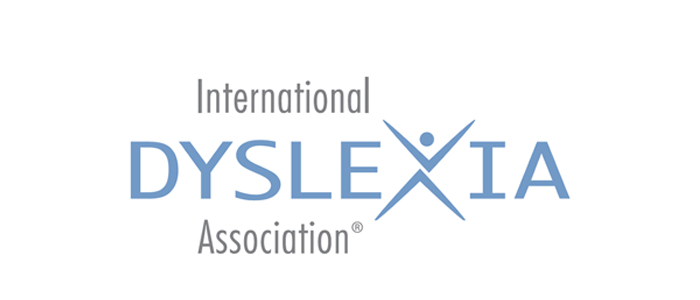
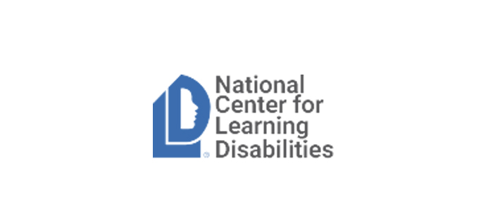
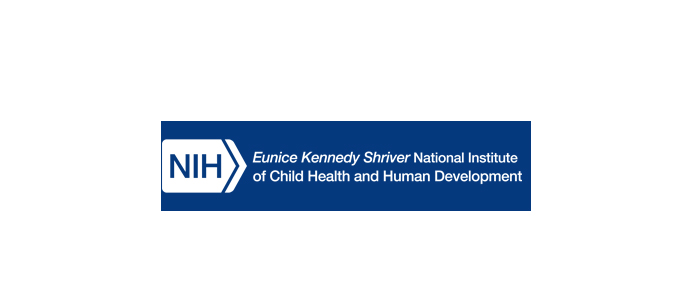

Children and Adults with Attention Deficit-Hyperactivity Disorder
Children and Adults with Attention-Deficit/Hyperactivity Disorder (CHADD), is a national non-profit, tax-exempt (Section 501 (c) (3) ) organization providing education, advocacy and support for individuals with ADHD. In addition to our informative Web site, CHADD also publishes a variety of printed materials to keep members and professionals current on research advances, medications and treatments affecting individuals with ADHD. These materials include Attention magazine, News From CHADD, a free electronically mailed current events newsletter, as well as other publications of specific interest to educators, professionals and parents.
Learn More

International Dyslexia Association
The International Dyslexia Association (IDA) is an international concerns itself with the complex issues of dyslexia. The IDA membership consists of a variety of professionals in partnership with people with dyslexia and their families and all others interested in The Association’s mission. We believe that all individuals have the right to achieve their potential, that individual learning abilities can be strengthened and that social, educational and cultural barriers to language acquisition and use must be removed. The IDA actively promotes effective teaching approaches and related clinical educational intervention strategies for people with dyslexia. We support and encourage interdisciplinary research. We facilitate the exploration of the causes and early identification of dyslexia and are committed to the responsible and wide dissemination of research based knowledge.
Learn MoreNational Resource Center on ADHD
Attention-deficit/hyperactivity disorder (ADHD) is one of the most common neurobehavioral disorders. It is
usually first diagnosed in childhood and often persists into adulthood. ADHD is a chronic disorder that
can negatively impair many aspects of daily life, including home school, work, and interpersonal relationships.
Learn More
Learning Disabilities Association
LDA Visualizes a World in Which: all individuals with learning disabilities are empowered to thrive and participate fully in society; the incidence of learning disabilities is reduced; and learning disabilities are universally understood and effectively addressed. LDA’s mission is to create opportunities for success for all individuals affected by learning disabilities and to reduce the incidence of learning disabilities in future generations.
Learn More

National Center for Learning Disabilities
The mission of NCLD is to improve the lives of the one in five children and adults nationwide with learning and attention issues—by empowering parents and young adults, transforming schools and advocating for equal rights and opportunities. We’re working to create a society in which every individual possesses the academic, social and emotional skills needed to succeed in school, at work and in life.
Learn More

National Reading Panel
In 1997, Congress asked the NICHD, through its Child Development and Behavior Branch, to work with the U.S.
Department of Education (ED) in establishing a National Reading Panel that would evaluate existing research and
evidence to find the best ways of teaching children to read.
The 14-member Panel included members from different backgrounds, including school administrators, working teachers, and scientists
involved in reading research.
On April 13, 2000, the National Reading Panel concluded its work and submitted its final reports. The Panel has not been reconvened
since that time and does not continue to work on this issue.
LD OnLine
LD OnLine seeks to help children and adults reach their full potential by providing accurate and up-to-date information and advice about learning disabilities and ADHD. The site features hundreds of helpful articles, multimedia, monthly columns by noted experts, first person essays, children’s writing and artwork, a comprehensive resource guide, very active forums, and a Yellow Pages referral directory of professionals, schools, and products.
Learn More
AETOnLine.org
The Association of Educational Therapists is the national professional association for educational therapists. AET defines and sets standards for the professional practice of educational therapy. Educational therapists provide a broad range of individualized educational interventions for children and adults with learning disabilities and other learning challenges.
Learn More